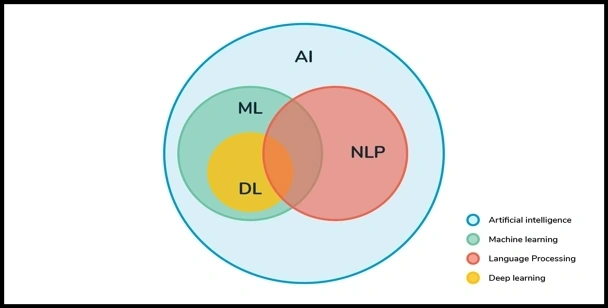
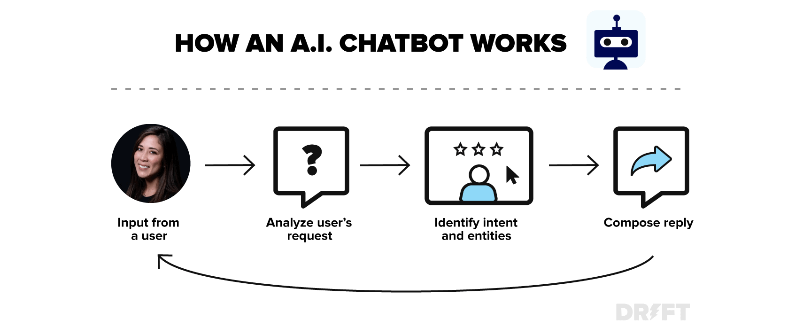
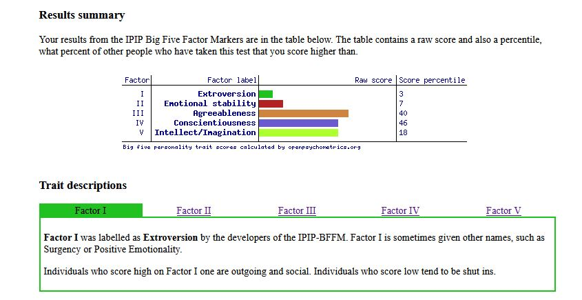
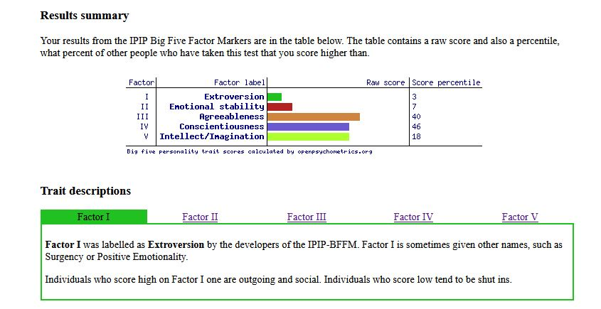

Cybersecurity by Steven Pigatto. S3851506
What does it do?
Cyber threats have come to be more prominent in the early 2000’s this is when the internet
was more available for people to start using it.
Once coding was available, threats such as malware coding could be produced. With the world
fast approaching modern technology,
which will result in a big surge of threats daily, A virus that was circulating in the
2000’s was affecting Microsoft systems called “ILOVEYOU” which was an attachment on an
e-mail.
This caused damage to data and would also send copies to people on your e-mail list.
Cybersecurity is a practice for protecting systems, network, and programs from digital
attacks.
The practice enables defending against malware, Phishing via e-mail, distributed
denial-of-service (DDoS)
attacks and ransom attacks on personal and corporate sensitive data. Cybersecurity provides
a layer of protection against any threat that arises against data,
infrastructure and tools that could be stolen.
It has become one of the most important tools due to the increase of activate movement of
data and sensitive information over the internet.
Humans are the weakest link when it comes to cybersecurity. Human errors recur and that’s
when computer systems come vulnerable.
This is when countermeasures are required. Software, hardware, and procedures is requiring
preventing applications from external threats.
Software design and security development has become more important. As more application are
enable to accessible over the network,
this would result in more threats. This has applications building its own security to try
minimising unauthorized code trying to manipulate data.
Countermeasures have been put into place to prevent threats or unauthorized users accessing
information or hardware.
Different software and have been developed to prevent attacks:
Security system helps control any access to the computer.
The security system can also block any traffic that it concedes to be harmful to the system.
The software is design to restrict incoming or outgoing traffic and protects data from
applications installed on the computer.
Routers are able to prevent IP addresses of the user’s computer be visible on the net
to prevent hacking.
The VPN is the identity of the network, the router helps to protect all activity and its
identity, by doing this helps prevent any data theft.
Encryption software is when messages that are sent would be converted into meaningless
text. The software is design to keep sensitive information to be kept secret and can only be
decrypted by the receiver.
The decrypted software converts the encrypted text back to the correct format.
Anti-virus programs help protect your computer from virus. Virus such as malware can
apply itself to applications by coding.
The anti-virus software scans the computer files to identify any threats inside your system
and removes them.
Spyware detection software is design to remove any traces of spyware in your computer
system. Spyware is design to prevent any glitches in your system, therefore users do not
detect the attachment.
Spyware can be in malware form or through cookies, the tracking system of your internet.
Biometric Authentication Systems works by comparing two sets of data which the data
requires to be nearly identical. Once the data is matched, it will give the required access
to the person. The data cannot be exactly matched because it is impossible to have two sets
100% the same. This helps prevent hackers be able to get access to the sensitive information
or hardware because it's harder for them to collect the information unless they are near
you.
However, If the system was bypassed, the hacker risks getting caught easer then an outside
hacker.
Biometric methods:
- Fingerprint scanners.
- Retina scanners.
- Iris scanners.
- Speaker recognition.
- Facial recognition systems.
- Hand and finger geometry.
- Vein geometry.
- DNA based.
- Behavioural Identifiers such as Typing recognition and Gait biometrics.
What is the Likely Impact?
With the future facing more threats due to the extant on technology has been available,
Organizations must be smarter in how they protect their data. This is when the following
methods come in place according to
Navigating New Cyber Risks pp 125-135 Under Future Solitons written by Ganna Pogrebna & Mark
Skilton.
Scenario Testing:
Organizations could simulate different attacks to understand the potential impact it could
have on their business.
By doing this, the data that was collected can be used to create a risk assessment and
develop a risk management plain to try
stop any future attacks.
Terraforming Cyberspace:
This exciting technology would be hard to get pass by.
Terraforming would work by removing any possible human related risks such as human errors or
abuse to the software and hardware.
The technology would possible be ran by AI or quantum computing.
Terraforming could be reality soon and this could eliminate the use of Cybersecurity
analysts.
Cryptography of the Future:
With new developing technology fast approaching, using encryption will become obsolete.
Other tools to help keep and manage passwords safe at the highest level of security will be
the way of the future.
Zero-knowledge proofs:
defined as “a method by which one party (the prover) can prove to another party (the
verifier) that something is true,
without revealing any information apart from the fact that this specific statement is true”
If this vision is successfully adopted,
it would be very use-full in levels which could protect people’s identity and privacy.
Mobile Targets:
An attack on a mobile which resulted in data breaches would require the Tech company to
adjust all data that was attached and the toolbox as well.
Instead of doing this, creating an index for the targeted phone would make it impossible for
the hacker to do their job.
Algorithmic active Cyber defence:
This type of defence uses traps to help lure and capture any interruptions caused by hackers.
This technology is already in place. The future for this technology will be more practice in
systems in the future.
The traps would be well calculated that it would be more effective in capturing,
diagnostics, and even future threats.
The future of Cybersecurity looks strong. Having this possible innovative technology to fight
cybercrime would be harder for any breaches to occur.
However, the impact in having them in place could cost jobs.
It would replace an entire range of cyber jobs because it would be less human interactive
because majority would be algorithm controlled.
How will this affect you?
Growing up in the early 90’s and the 2000’s and see the advancement of technology was so
excited I could not get enough of it.
I remember the diel up internet which I thought was the bees’ knees. Playing games and
chatting to friends on MSN and IQ after school while doing homework was fun.
I do not recall anything about security, except for a Firewall and Anti-Virus software. Back
then, I did not know what that was out there could harm the computer.
After doing this research, I have learnt a lot of dangerous software in the cyber web that
could do lots of damage that I was not aware of existence.
This is a real revelation, not just for myself but for my family and friends as well.
With technology advancing each year, more dangerous the world wide web will become.
Having a 5-year-old with iPad is concerning because they access the web.
I rely on Apple’s security system to keep the iPad safe from harmful things. Sure, I could
just monitor the usage, but I cannot be there 24/7.
If the iPad were compromised, my phone could be next due to the linking of Apple products.
eeing new software emerge in the market is a good sign we will be protected from outside
interference.
Having products with the latest security features such as fingerprinting, and face
recognition software installed is a wonderful thing.
Not only it will stop unauthorized access but also protecting all our information and all
passwords.
However, the fingerprint scanning can be time consuming because sometimes and it fail then
you need to go through the process of putting your passwords in.
Looking into the future, I feel at ease for my growing family. My kids will have one of the
strongest security systems in the world working before they understand about all this. But
having all this security still does not stop online behaviour such as bullying.
We should investigate software that detects unwanted behaviour so we could stamp it out
completely.
Natural Language Processing and Chatbots By Nicole Attard - S3924819
What does it do?
Natural language processing (NLP) is a branch of artificial intelligence which refers to the
use of computational techniques to "learn, understand and produce human language content"
(Hirschberg & Manning 2015). In other words, a computer will receive input from a user,
either in a written or oral form, gain an understanding of the content and then respond
appropriately. Given the complexities of human language, especially with verbal
communication, NLP combines "statistical, machine learning and deep learning models" (IBM
Cloud Education 2020) in order to derive meaning and provide the desired outcome.
Machine learning is a key element of natural language processing. By providing learning
algorithms with large amounts of data relating to languages, the computer is able to learn
more effectively how to identify the intent, categorise the request and respond in a
conversational format (IBM Cloud Education 2020).

(AthenaTech LLC, 2019)
As a result of the developments in areas of NLP, machine learning and artificial intelligence
(AI) came the development of chatbots. A chatbot is essentially an automated conversational
tool that is able to interact with users through text (for example, website chatbots) or
speech (such as automated phone banking services, or interacting with Siri or Alexa) (Oracle
2021).

(Drift, n.d)
Both NLP and chatbots use what are known as NLP tasks, where computers manipulate and
translate language into information they can understand to produce a certain outcome (IBM
Cloud Education 2020). Some of these basic, fundamental tasks are:
- Speech recognition
- Speech tagging (also known as grammatical tagging)
- Word sense disambiguation
- Named entity recognition (NEM)
- Co-reference resolution
- Sentiment analysis, and
- Natural language generation
Search engines and email filtering are some of the most common services where NLP is used.
Both use combinations of NLP tasks to analyse large amounts of data from different sources
to return results or sort messages based on filters selected by users. NLP has also been
applied to speech recognition based, personal-assistant devices such as Amazon's Alexa and
Apple's Siri, where users are able to interact with the device to complete various tasks
using conversational, everyday language.
Chatbots are now often the first point of contact for individuals in areas such as customer
support and assistance. Many companies that provide goods and services, such as
telecommunication providers or technology suppliers, usually provide a chatbot service on
their websites or even in their call centres.
NLP and chatbots are also used in areas such as the medical industry where large amounts of
unstructured data sets are able to be analysed through machine learning algorithms to gain
essential information for a variety of different reasons, such as determining where to
direct future research or how to allocate resources, or gaining understanding of results
from clinical trials (ForeSee Medical, Inc 2021).
Despite the benefits of both NLP and chatbots in today's society, one main limitation has
been the intricacies of languages. The first step performed by a chatbot is to extract from
the input the relevant information (Expert.ai Team 2020). As there are so many combinations
of words that a person may choose to use to request a particular function of a chatbot, the
chatbot must sufficiently be able to extract the relevant input and understand what the user
is attempting to achieve. If the chatbot is not able to understand what is being requested
of them, there may be no action the chatbot can perform in response. However, with the
progress made in the fields of NLP, AI and machine learning, chatbots are becoming more
advanced, capable of providing a greater range of services.
What is the Likely Impact?
Natural language programming has already contributed greatly to society, with many new
applications and services that have been developed. Most people would have interacted with
chatbots in one form or another and with the progress being made in these related fields,
the use of chatbots for not only individuals but also businesses will become more prevalent,
such as context-sensitive digital assistants that are able to learn personal preferences and
habits and are integrated with other programs (Lindquist 2018).
One industry which may be impacted by improvements in NLP would be transcript, subtitle and
closed-captioning services. Currently, these are mainly created through individuals
reproducing what they think they can hear. Not only does this often result in inaccuracies,
but also the process is time consuming and labour intensive. Though NLP has already led to
various speech to text converters, for example, with autogenerated subtitles on YouTube,
just as humans experience difficulties, the complexities of human language can also make it
difficult for computers to accurately reproduce what has been said into a text format.
Despite the limitations of both human efforts and NLP, it is clear that these two processes
in combination may assist in terms of maximising production while decreasing time and
effort, for example, by automating the speech to text conversion with humans undertaking a
quality assurance role rather than manually creating the complete transcript.
The use of chatbots as customer service assistants can be seen as having both a positive and
a negative NLP impact on society. Service providers like banks and internet providers often
use chatbots in order to collect initial information from users to directing inquiries to
the relevant department. Using chatbots as the first contact enables streamlining of the
customer service experience and higher service satisfaction for users by receiving
information from the user before connecting to an agent and categorising and directing
requests to the appropriate departments for faster responses (Makadia 2019). However, with
more efficient and interactive chatbots entering the customer service areas previously
reserved for individuals, there may be a corresponding decline in the number of persons
employed in these positions.
Overall, while there are positives and negatives to progress being made in the fields of NLP
and chatbots, for many, the convenience provided by the devices and services developed will
greatly improve their quality of life, completing tasks more efficiently and improving
customer satisfaction through less human interaction.
How Will This Affect You?
In modern society, there are already many examples of natural language processing and
chatbots being employed, from closed-captioning for live television or subtitles on videos
which assists the hearing impaired to the interactive nature of AIs such as Siri and Alexa
that has the potential to dramatically improve our quality of life.
The benefits of using NLP in order to analyse large data sets has already been proven and in
use in industries such as medical, retail and education, amongst others. In the medical
industry in particular, the move towards things such as digitisation of patient records and
audio recordings of consultations which can be automatically transcribed may result in
better patient care where doctors and nurses are not engaging in time-consuming
administrative actions and are instead able to improve quality of care by focusing on more
important issues (McQuilkin 2020), with NLP‑based data mining able to collect and produce
relevant information from various sources.
The use of devices utilising NLP such as the Alexa voice support on the Amazon Firestick also
has great benefit in terms of allowing users to easily access content, particularly those
who may be elderly or disabled by simply verbally asking these devices to complete an
action.
The prevalence of text-based and speech-based chatbots on a variety of different platforms
has also had a major positive impact both in terms of individuals and businesses. While
customers are receiving more targeted assistance and faster solutions to their issues,
businesses are also able to save costs and increase efficiency by reallocating their labour
force to perform higher order tasks that would be difficult for computers to complete.
Cloud Computing by Cristopher Ariel Castro Inostroza - S3923904
What does it do?
With internet access availability, the cloud allows the user entry to distinct types of
data stored in the cloud through any chosen device, smartphone, laptop, tablet, etc. This technology also
permits the user to work together with
other users, making more accessible and more efficient time management and allowing working from home or
away from the office.
Considering all the advantages cloud computing gives to businesses, flexibility would be one of the most influential and
crucial parts of cloud computing success. The future for this emerging technology looks promissory, helping cutting costs in
technology deployment, sometimes cutting even half of the total cost of companies. Cloud infrastructure allows different
institutions to deploy any application globally in minutes with just a few clicks. This is a new way of delivery, and
therefore new implementation and creation are updated in a brief time. For example, cooling systems are essential for
physical cloud centres. It keeps the cloud’s hardware at a suitable working temperature. Nevertheless, cooling systems
come with a prohibitive cost when building a physical clouds database. New colling systems models are being implemented
and develop, being one of the latest: under the ocean cooling system
by google cloud “Hamina,” one of the many data centres across the globe to handle the 40,000 search queries a second.
Nowadays, you can easily choose diverse types of cloud services depending on your needs. We could have several types of
cloud services such as:
Platform as a Service (PaaS)
PaaS takes away the task of managing the underlaying infrastructure (usually hardware and operating systems) and allows
you to focus on the deployment and control of your applications. This helps to make you more efficient work as you don’t have
to worry about resources attainment. “Capacity planning, software maintenance, patching, or any of the other undifferentiated
heavy lifting involved in running your application.” (Harvard EDX, 2021)
Software as a Service (SaaS)
SaaS procures you with the complete package since the service provider arranges
and manages the operations of your Cloud service. In most cases,
“In most cases, people referring to SaaS are referring to end-user applications” (Harvard EDX, 2021). With SaaS as a service, you
only need to think
about how to use that particular software. (Harvard EDX, 2021)
Michael Sy - S3921688
Details...
Theodore Haluska - S3925389
What is it, and what does it do?
Small computing devices such as Raspberry Pi, Arduino, and Makey Makey are known as SBCs
(Single - Board Computer) with not only processing capabilities but have the potential for
communication options through either onboard functions or additional modules that may be
added such as Ethernet, Wireless, or Bluetooth. SBCs are manufactured to not only supply a
cost-effective, compact design but a highly portable hardware solution. SBCs are not only an
excellent choice for monitoring sensors or used in a remote setting, they are used in
proto-typing, and due to the low cost of these devices, they are also used in education to
provide young and old with the concepts of basic computer functions as well as programming.
Below is an example of SBC sizes (although not limited):

Table 1.1 Role of Single Board Computers (SBCs) in rapid IoT Prototyping, by G. R.
Kanagachidambaresan
Short explanations of Raspberry Pi, Arduino, and Makey Makey
Raspberry Pi
Raspberry Pi has its own on-board RAM, CPU, Display ports, Ethernet port, USB ports for a
start, it also uses an operating system such as Raspbian OS, Snappy Ubuntu Core, Ubuntu
Mate, OSMC and LibreElec (Kodi-based media center), non-Linux based Risc OS, it can even run
Windows 10 IoT Core (differs from a normal Windows 10 installation). These are the official
operating systems that are listed for the device with countless others out there. Raspberry
Pi’s operating system Raspbian OS uses Scratch to write and debug python code for your
intended use by sending those commands to the GPIO (general purpose input/output) pins which
in turn you have your hardware connected to.
Arduino
Arduino is classified as a microcontroller (embedded controller, memory, peripherals,
processor) and does not have an operating system, instead, you write the code and upload it
straight to the board which leaves out the chance that a third-party application or
operating system will interfere with the commands or code.
Makey Makey
Makey Makey is a simple device that lets the user use everyday objects as a keyboard or mouse
input, you can create your own sensors, the idea is to get users to use their imagination
when it comes to an invention or even out of the box thinking in everyday life and the main
purpose is the education with the use of sensors and circuits.
SBCs are used in all forms of applications from education, industrial, software and hardware
development, scientific applications such as weather balloons, and even robotics. They
supply necessary systems at a low power advantage to otherwise power-hungry traditional
computers.
SBC’s will more than likely find their way into more commonly used products whether the user
is aware or not. SBCs are becoming more AI friendly while traditionally AI has been sent to
the cloud for processing, due to privacy concerns over the years these devices are evolving
and have the capacity at least on a general level to possibly provide the AI calculations
locally instead of remotely.
Advances in computer chips and what are called AI co-processors are taking what would take an
SBC a long time to generate a result though AI to a more consistent and efficient time when
comparing the original time it takes the SBC to do the calculations to say a Cloud-based
system.
What is the likely impact?
The impact of these technologies is that they have to potential to automate certain aspects
of a job which some may argue this will create job losses. While this may be true in some
form or another, it can also create new positions, if we use the example of automobiles,
this forced carriage makers out of business, while also creating a new field of work for
autobody makers.
As SBCs technology evolves, becoming faster, smaller, more plug and play, the range of users
increase leaving the potential for much bigger audience as well as their applications in
everyday devices we use from a workplace setting to more personal at home.
The growing number of users educated in computer sciences also has the chance to affect the
number of job seekers increasing competition for positions such as in programming. SBCs can
streamline or automate some processes and potentially make some workers redundant although
this does not affect all industries instead SBCs may also take the workload off those
employees so that they may focus more on the critical aspects of the job rather than some of
the minor details.
How will this affect you?
The more individuals involved with SBCs and their development may affect daily life through
several ways by increasing the creativity and potential to lead into new products. Let’s
take the normal household chore of vacuuming or cleaning the floor, robot vacuums already
exist and although they cannot navigate all obstacles or pick up items that had been left on
your floor, they do a particularly decent job when it comes to daily cleaning at least for
the floor leaving you to focus more on other tasks and events happening in your daily life.
These robots use SBCs to navigate your home along with some form of AI to choose the
appropriate route and mapping, the boundaries within the home, even remember obstacles, they
even return to the dock to empty their canister and recharge when low on battery.
As far as my personal day to day life, SBCs have the ability to change my daily life by
making me more efficient at more important tasks whether it be at work or home, the age of
technology although the benefits have also created more work for the average user and
through the use of SBCs we may be able to cutback the reliance on certain aspects of our
lives so we may enjoy it more.

 
